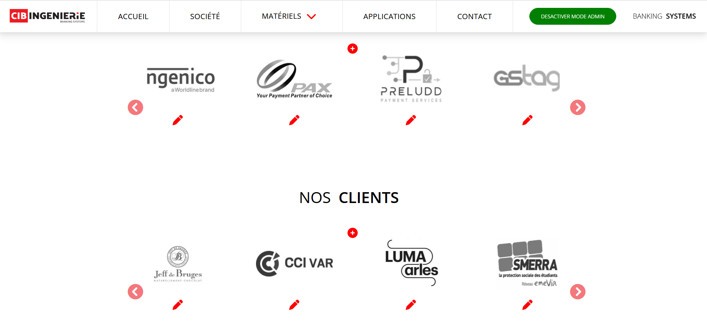
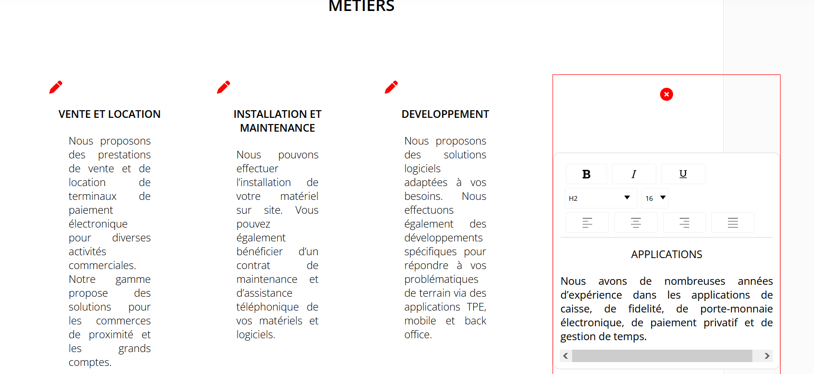
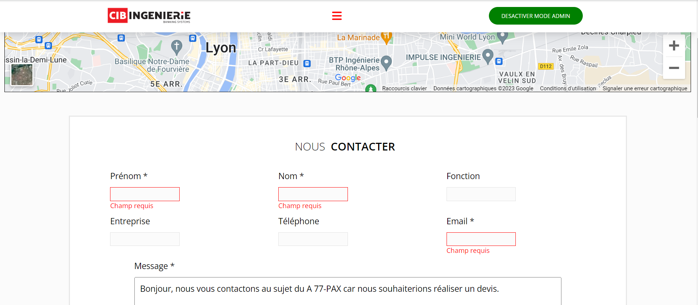

J'ai procédé à une refonte complète du site en utilisant React JS pour bénéficier de la gestion dynamique des composants. Cela a amélioré la réactivité du site tout en optimisant les performances globales.
L'ajout d'un éditeur de texte en mode admin facilite la gestion du contenu par des non-développeurs. Cela permet des mises à jour rapides et intuitives sans nécessiter de connaissances techniques avancées.
J'ai intégré un routeur pour optimiser la navigation au sein de l'application. Cette solution technique assure une expérience utilisateur cohérente en gérant efficacement les différentes vues de l'application.
Pour la gestion des données, j'ai choisi d'utiliser Supabase Database, offrant une solution scalable et performante. Cette intégration simplifie le stockage et la manipulation des données, assurant ainsi une gestion robuste des informations nécessaires au bon fonctionnement de l'application.